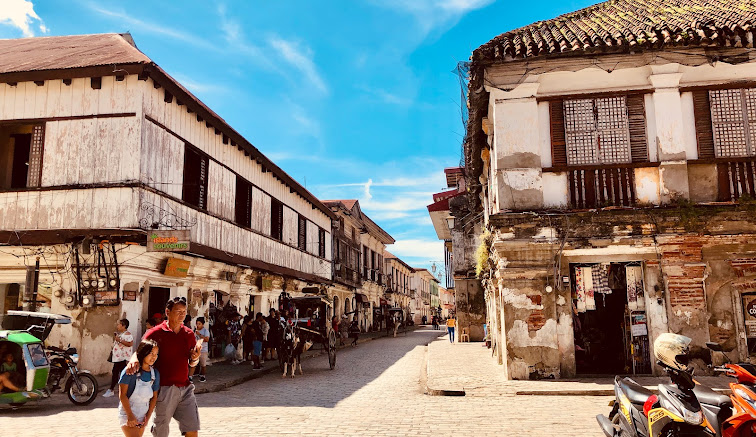
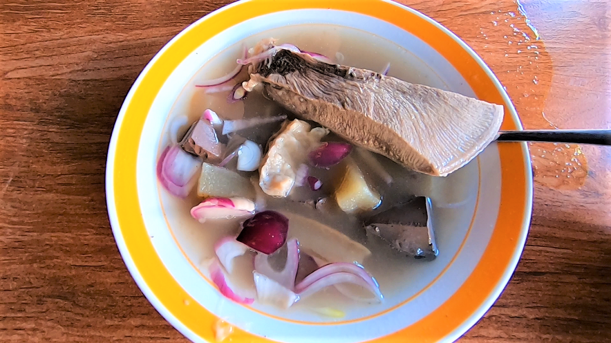

Welcome to the captivating region of Ilocos, where history, culture, and natural beauty converge to offer an unforgettable travel experience. Located in the northern part of the Philippines, Ilocos is renowned for its picturesque landscapes, colonial architecture, and rich heritage. Whether you're a history enthusiast, a nature lover, or simply seeking an adventure, Ilocos has something special to offer.
The best time to visit Ilocos is during the dry season, which typically runs from November to April. During these months, the weather is generally sunny and dry, making it ideal for exploring the region's outdoor attractions and enjoying its stunning beaches. However, if you're interested in witnessing the vibrant festivals that Ilocos is famous for, plan your visit during the summer months when colorful celebrations take place across the region.
Best place to visit
VIGAN

Vigan is a UNESCO World Heritage Site known for its well-preserved Spanish colonial and Asian architecture. Here, you can wander through cobblestone streets lined with ancestral houses, visit the iconic Calle Crisologo, and explore historical landmarks such as the St. Paul Metropolitan Cathedral and the Syquia Mansion.
Don't miss the opportunity to experience a calesa ride, a traditional horse-drawn carriage, which adds a touch of nostalgia to your exploration of this charming city.
Where to See and Do in Ilocos

Marvel at Paoay Church:
Visit the UNESCO-listed Paoay Church, also known as the Saint Augustine Church, a stunning example of Baroque architecture with its massive buttresses and coral stone walls.

Relax on Pagudpud's Beaches:
Spend a day soaking up the sun on the pristine beaches of Pagudpud, including Saud Beach and Blue Lagoon.
Enjoy water sports such as swimming, snorkeling, and windsurfing, or simply relax and enjoy the scenic views.

Experience Sandboarding in Paoay Sand Dunes:
Go on an exhilarating sandboarding adventure in the Paoay Sand Dunes, where you can slide down the sandy slopes and enjoy panoramic views of the coastline.

Visit Cape Bojeador Lighthouse:
Explore the historic Cape Bojeador Lighthouse in Burgos, Ilocos Norte, the highest lighthouse in the Philippines. Climb to the top for panoramic views of the West Philippine Sea and the surrounding countryside.

Island Hopping in Hundred Islands:
Explore the Hundred Islands National Park in Pangasinan through island hopping, snorkeling, and swimming among its numerous islets and crystal-clear waters.
Foods
The Ilocos Region is renowned for its flavorful and unique cuisine, influenced by its rich history and abundant local ingredients. Here are some of the best foods to try when visiting Ilocos:
1. Empanada
A must-try snack in Ilocos, empanada is a deep-fried pastry filled with a savory mixture of ground meat (often longganisa), vegetables (such as grated green papaya or cabbage), and sometimes egg. It's typically served with vinegar dipping sauce.
2. Bagnet
Bagnet is a crispy deep-fried pork belly, similar to pork cracklings but with a richer flavor. It's often served as a main dish with rice, along with a side of tomato-onion salad or with pinakbet (mixed vegetables sautéed in shrimp paste).
3. Vigan Lonnganisa
Vigan longganisa is a garlicky and tangy native sausage made from ground pork, garlic, vinegar, and spices. It's usually served for breakfast with garlic fried rice, eggs, and vinegar dipping sauce.

4. Ilocos Chicharon
Chichacorn is a crunchy and flavorful snack made from corn kernels that are deep-fried and seasoned with various flavors such as garlic, cheese, or barbecue.

5. Sinanglao
Sinanglao is a hearty beef soup made from beef innards (such as liver, heart, and intestines), flavored with bile for a distinct bitter taste. It's commonly served with onions, chili peppers, and calamansi (Philippine lime).
